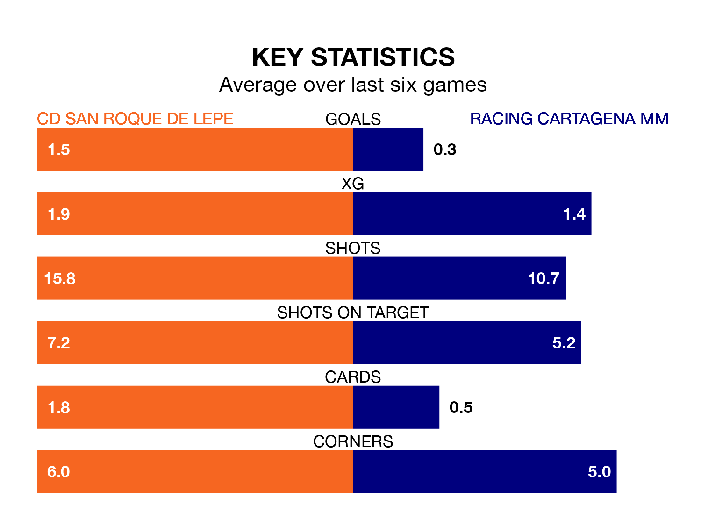

Racing Cartagena MM travel to CD San Roque de Lepe on early Sunday in the Segunda División RFEF Group 4.
The visitors come into the game on the back of a defeat in their last match, having lost to Marbella 1-0 away.
San Roque de Lepe, meanwhile, won their last match, 2-0 against Linense, with their goal scored by Iván Robles Dos Santos.
With 15 goals in 27 games so far this season, Racing Cartagena MM are the league's lowest scorers with 0.6 goals per game. But they are conceding fewer than average too, letting in 21 goals at a rate of 0.8 per game.
San Roque de Lepe, meanwhile, are average scorers, with 1.0 goal per game. They have also conceded 1.0 goal per game.
The home side are 14th in the table after 27 games, of which they have won eight and drawn seven, earning 31 points.
The visitors are three places ahead of San Roque de Lepe in 11th, with seven wins and 11 draws putting them on 32 points.
San Roque de Lepe are in reasonable form in the Segunda División RFEF Group 4, with three wins and two draws from their last six games.
With a win and three draws over that period, Racing Cartagena MM's form is worse – they have taken six points from 18, compared to the hosts' 11.
In the last three years, San Roque de Lepe and Racing Cartagena MM have played each other on three occasions. San Roque de Lepe won one of them and Racing Cartagena MM the other.
Their last meeting was on November 11, when Racing Cartagena MM won 2-1 at home.
Updated: 10:19 (UTC), 22/03/24